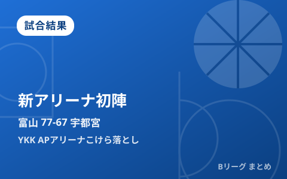

富山、新アリーナ「YKK APアリーナ」こけら落としを白星で飾る 宇都宮に77-67、ウィリスジュニアがダブルダブル

10月3日、富山市総合体育館を改修した新アリーナ「YKK APアリーナ」で、富山グラウジーズのB.PREMIERホーム開幕戦が行われました。対戦相手は宇都宮ブレックス。後半に逆転した富山が77-67で勝利し、新アリーナのこけら落としを白星で飾るとともに、2021年3月24日以来となる宇都宮戦の勝利を手にしました。会場には4825人のブースターが詰めかけ、新会場の初陣を盛り上げました。
後半に逆転、2021年以来の宇都宮撃破
試合は宇都宮が第1クォーターで先行する立ち上がりとなりましたが、富山が第3クォーターで押し返して逆転。最終的には77-67で富山が快勝しました。富山にとって宇都宮との対戦での勝利は2021年3月24日以来で、約4年半ぶりの白星となりました。
| クォーター | 富山 | 宇都宮 |
|---|---|---|
| 1Q | 23 | 26 |
| 2Q | 16 | 16 |
| 3Q | 23 | 12 |
| 4Q | 15 | 13 |
| 合計 | 77 | 67 |
ウィリスジュニアがダブルダブル、ベンチ陣も躍動
勝利した富山は、ウィリスジュニアが27得点10リバウンドでダブルダブルを記録し、チームを牽引しました。ベンチから出場したラベナが19得点を挙げ、アンゴラも14得点8リバウンド5アシスト5スティールと攻守両面で貢献。先発・ベンチ陣が噛み合った勝利となりました。
| 選手（富山） | 成績 |
|---|---|
| ウィリスジュニア | 27得点・10リバウンド |
| ラベナ（ベンチ） | 19得点 |
| アンゴラ | 14得点・8リバウンド・5アシスト・5スティール |
宇都宮は後半停滞、ケルの奮闘届かず
敗れた宇都宮は、ケルが22得点13リバウンドでダブルダブルを記録したものの、第3・第4クォーターで得点が伸びず逆転を許しました。フォトゥが13得点、遠藤祐亮が10得点を挙げましたが、富山の後半の勢いを止めることができませんでした。
| 選手（宇都宮） | 成績 |
|---|---|
| ケル | 22得点・13リバウンド |
| フォトゥ | 13得点 |
| 遠藤祐亮 | 10得点 |
新アリーナ「YKK APアリーナ」浸透の一戦
今回の会場は、富山市総合体育館を改修して誕生した新アリーナ「YKK APアリーナ」。富山にとって新リーグ「B.PREMIER」でのホーム初陣であり、会場そのもののこけら落としとなる一戦でもありました。試合後、27得点を挙げたウィリスジュニアは「勝ちを喜びすぎないことも大事。切り替えて4日も勝ちを狙いたい」と、翌日に組まれた連戦を見据えたコメントを残しています。新リーグの開幕概要はB.PREMIER開幕の記事、各クラブの夏の補強状況は8月の移籍まとめ記事でそれぞれ整理しています。
Q. 富山と宇都宮の対戦成績は？
A. 報道によると、富山が宇都宮から勝利を挙げたのは2021年3月24日以来とのことです。長らく対戦で苦しんでいた相手からの白星だけに、新アリーナでの価値ある1勝となりました。
出典：北國新聞社「ＹＫＫ ＡＰアリーナ こけら落とし白星で祝う 富山グラウジーズ ホーム開幕、４８２５人沸く」／北國新聞社「富山グラウジーズ、新アリーナで躍動 声援浴び、攻守かみ合う ウィリスジュニア、最多２７得点」／バスケットボールキング「Bプレミアホーム開幕戦で富山が宇都宮に勝利…2021年3月24日以来の白星」ほか
https://www.hokkoku.co.jp/articles/-/2248816
https://www.hokkoku.co.jp/articles/-/2248820
https://basketballking.jp/news/japan/20261003/635895.html